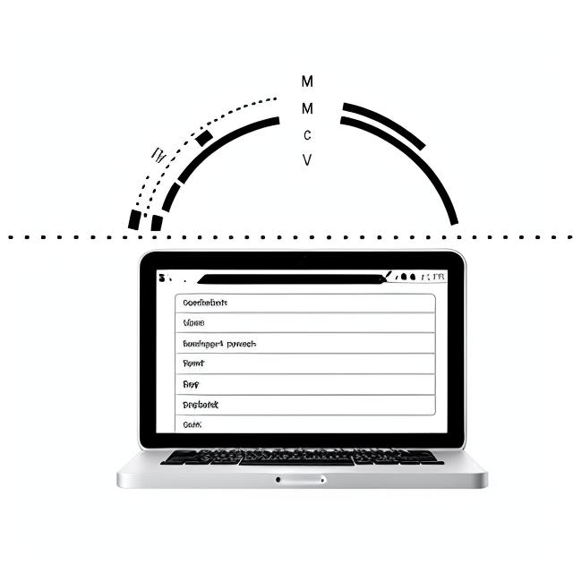
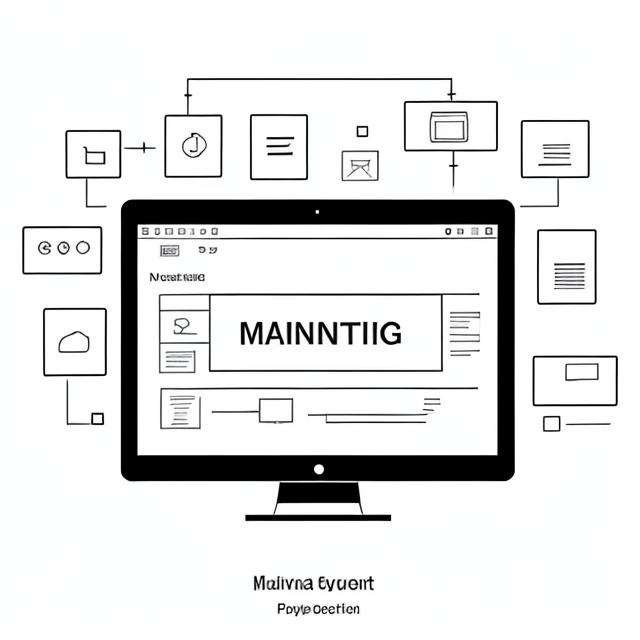

Patetas TDS |
Início | Portfolio 01 | Portfolio 03 | Contate-nos |
Idade: 29 | Cidade: Teresina, Piauí
|  |
Projeto 1: Desenvolvimento de Aplicativo de Gerenciamento de TarefasDescrição: Desenvolvimento de um aplicativo de gerenciamento de tarefas para dispositivos móveis... Tecnologias Utilizadas: React Native, Firebase, Redux, Expo Data de Conclusão:Janeiro de 2024 |
|  |
Projeto 2: Sistema de Gestão de Estoque para Pequenas EmpresasDescrição: Desenvolvimento de um sistema de gestão de estoque sob medida para pequenas empresas locais... Tecnologias Utilizadas: Django, PostgreSQL, HTML/CSS, JavaScript Data de Conclusão:Fevereiro de 2024 |
Projeto 3: Website Institucional para ONG de Proteção AnimalDescrição: Desenvolvimento de um website institucional para uma ONG de proteção animal sediada em Teresina, Piauí... Tecnologias Utilizadas: WordPress, HTML/CSS, PHP, MySQL Data de Conclusão:Março de 2024 |
|
|
| 1 | |
| 2 | |
|
Para mais informações sobre as redes sociais de cada um dos desenvolvedores, estarão em seus respectivos portfólios. |
Copyright © |